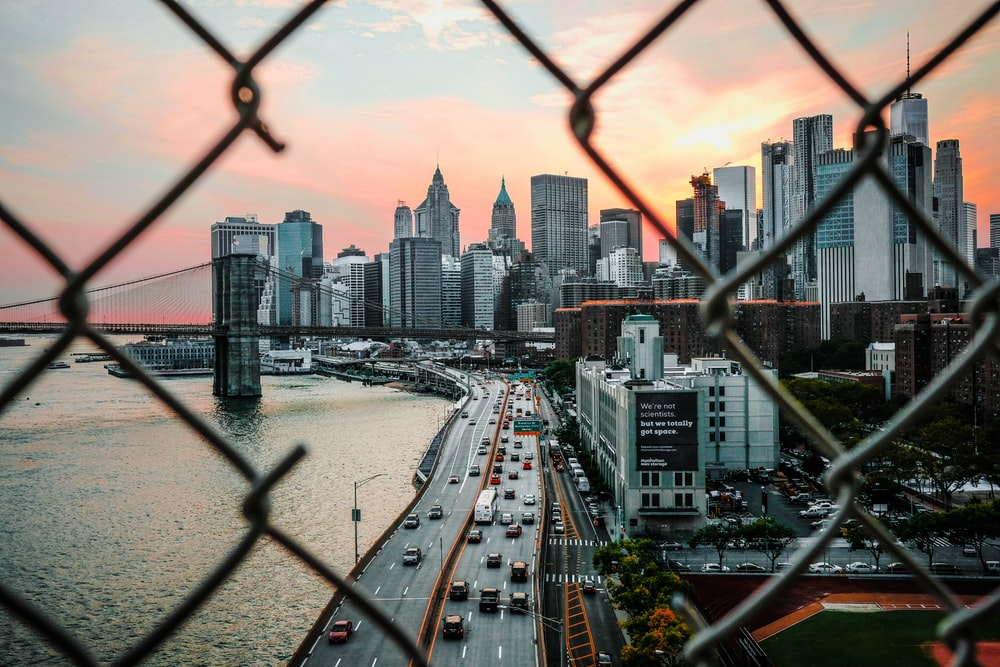

f you've ever seen an iconic photograph of the New York City skyline, Chicago skyscrapers, the Seattle waterfront, or San Francisco’s downtown, you’ve experienced the marvel of cityscape photography.

Cityscape photography is a photographic style that captures urban landscapes, particularly skylines. Much as natural vistas are the subject of landscape photography, manmade features like streets and tall buildings are the focus of cityscape photography. You can shoot city photography from a wide array of vantage points (anywhere from street level to the top floor of a tall building), and you can capture both day and night cityscapes, depending on your equipment.

Shooting cityscapes has much in common with traditional landscape photography, but there are a few specific tips for ensuring that your cityscape photos are the best they can be.
1. Focus on elements that make your location unique. No two cities are alike. Challenge yourself to produce photographs that highlight the features specific to the city in which you're shooting. In Los Angeles, that might be the beachfront or the L.A. River. In Hong Kong, that might be the green mountains that rise up behind the skyscrapers. In Manhattan, you might take skyline shots of art deco icons like the Chrysler Building and Empire State Building.
2. Shoot during golden hour and blue hour. The best light for cityscape shots often comes shortly before sunset (the golden hour) and shortly after sunset (the blue hour). These times of day provide soft light that brings out the detail in your subjects, including stately building facades. The difference, of course, is that city lights will be more noticeable in the low light of blue hour after the sun goes down.
3. For midday photography, use neutral density filters. As wonderful as the sun can be during the golden hour, its light can wash out photographs during midday. Counter this with a neutral density filter (also called an ND filter) or a polarizing filter, which will prevent sunlight from overwhelming your camera sensor.
4. Use a low ISO when possible. A high ISO brightens a photograph, but it also introduces visual noise into the image. With this in mind, use the lowest ISO you can get away with. If you’re mostly shooting in sunlight, you won't need a high ISO. As the sun dips and gives way to darkness, though, you'll need to increase the ISO to get properly lit shots.
5. Play with light trails in your street photographs. By creating a long exposure with a slow shutter speed and training your camera on passing cars, you can capture the light trails associated with night photography in the big city. Cars are not the only artificial light sources for this type of photograph. You can also create light trails with office building lights if you gently move the camera while the shutter is open.
6. For a starburst effect, use a small aperture. Do you want your city light sources (like streetlights and traffic lights) to glow around the edges? Try using a high f-stop number to produce a small aperture, which diffracts the light.
7. Use a long focal length to create depth of field. Using a long focal length or a dedicated telephoto lens can create a bokeh effect, putting your subjects in focus and transforming the background into a blur. This works well if you're seeking to focus on a particular building when shooting skyline photography. Telephoto lenses will also come in handy to shoot subjects that are far away.
8. Find ways to incorporate nature. City life involves more than buildings and machines. Cities also offer parks, waterfronts, and walking paths. When cityscape photographers seek to capture the essence of a city from the perspective of its inhabitants, they include bursts of nature. Situate yourself in a park or on the waterfront with a wide-angle lens, and open yourself to the images that might present themselves.
9. Use post-processing to your advantage. Professional photographers make regular use of post-processing software like Photoshop and Lightroom to touch up their photographs. Use the tools at your disposal to get the best possible image for your viewing audience, and familiarize yourself with post-processing software to edit your shots to perfection.
